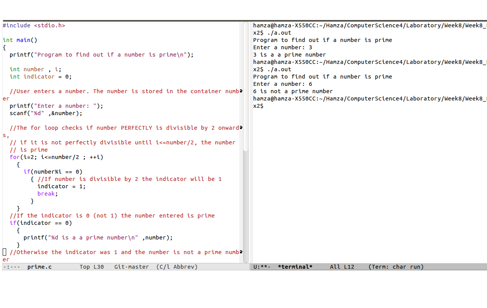

C has been used for many years because of its powerful nature.
The language is structural based. This means the a constructor can be made using default values can be used to create smaller structures can be made with their own values.
Below is a small example of a C program.
